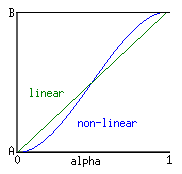

Global Function (UT)
The functions listed here are globally available in all classes. Due to UnrealScript's strict object-oriented approach, they're actually methods of the Object (UT) class.
Almost all of these functions are declared as native and final (see class syntax) and most of them are also static functions.
See vector and rotator for functions on those variable types.
See Global Function for global UT2003 functions.
Integer Functions
- int Rand (int Max) [static]
- Returns a random number ranging from 0 to Max-1.
- int Min (int A, int B) [static]
- Returns the lower of the two values.
- int Max (int A, int B) [static]
- Returns the higher of the two values.
- int Clamp (int V, int A, int B) [static]
- If V is smaller than A, A is returned. If V is larger than B, B is returned. In any other case V is returned.
Float Functions
- float Abs (float A) [static]
- Returns the absolute value (also known as the modulo) of A, usually written |A|. Eg: Abs(5) == Abs(-5) == 5.
- float Sin (float A) [static]
- Returns sine( A )
- float Cos (float A) [static]
- Returns cosine( A )
- float Tan (float A) [static]
- Returns tan( A )
- float Atan (float A) [static]
- Inverse tangent. Returns tan-1(A). Other inverse trig functions are not included in UT's UnrealScript. (see Useful Maths Functions)
- float Exp (float A) [static]
- Returns eA
- float Loge (float A) [static]
- Returns log(A), the natural logarithm.
- float Sqrt (float A) [static]
- Returns the square root of A.
- float Square (float A) [static]
- Returns A2.
- float FRand ( )
- Returns a random number between 0 and 1.
- float FMin (float A, float B) [static]
- Returns the lower of the two values.
- float FMax (float A, float B) [static]
- Returns the higher of the two values.
- float FClamp (float V, float A, float B) [static]
- If V is smaller than A, A is returned. If V is larger than B, B is returned. In any other case V is returned.
- float Lerp (float Alpha, float A, float B) [static]
- "Returns the linear interpolation between A and B."
The return value is calculated through something like this:
(B - A) * Alpha + A - float Smerp (float Alpha, float A, float B) [static]
- Returns an Alpha-smooth nonlinear interpolation between A and B.
The return value seems to be calculated through something like this:
(-2 * (B - A) * Alpha ** 3) + (3 * (B - A) * Alpha ** 2) + A - 
- float RandRange (float Min, float Max)
- Returns a random number between Min and Max. This function is not static.
String Functions
- int Len (coerce string S) [static]
- Returns the length of the string, i.e. the number of characters in it.
- int InStr (coerce string haystack, coerce string needle) [static]
- If the string needle is found inside haystack, the number of characters in haystack before the first occurance of needle is returned. That is, if the needle is found right at the beginning of haystack, 0 is returned. If haystack doesn't contain needle, InStr returns -1.
- string Mid (coerce string S, int skip, optional int num) [static]
- Returns a substring of S, skipping skip characters and returning the next num characters or all remaining if the third parameter is left out. Mid("hello", 0, 2) returns "he", Mid("hello", 1) returns "ello", i.e. all but the first character.
- string Left (coerce string S, int num) [static]
- Returns the num leftmost characters of S or all of them if S contains less than num characters.
- string Right (coerce string S, int num) [static]
- Returns the num rightmost characters of S or all of them if S contains less than num characters.
- string Caps (coerce string S) [static]
- Returns S converted to uppercase.
- string Chr (int i) [static]
- Returns the character matchin the given ASCII code.
- int Asc (string S) [static]
- Returns the ASCII code of the first character in S.
General Functions
Logging
- Log (coerce string S, optional name Tag) [static]
- Writes a line to the log file. The line begins with the Tag or "ScriptLog:" if Tag was not specified, followed by the log string.
The tags 'Error' and 'Warning' (and probably others, too) have a special meaning in Commandlets. - Warn (coerce string S) [static]
- Same like Log, but the line starts with "ScriptWarning:" and contains information about the object, state and function that called Warn.
- string Localize (string SectionName, string KeyName, string PackageName) [static]
- Returns the string found in PackageName.int in the [SectionName] section. Logs an error if no localization for the specified string is found.
State-Related
- GotoState (optional name NewState, optional name Label)
- Switches to a new state. State code execution begins at the specified label or at "Begin:" if Label is not specified.
Before the state is changed the old state's EndState function is called. After the state changed BeginState of the new state is called. - bool IsInState (name TestState)
- Returns whether the object's current state is the one specified.
- name GetStateName ( )
- Returns the object's current state name.
- BeginState ( ) [not native, not final]
- This event is executed during GotoState right after the object switched to the new state. This function can be overridden in any state of any class.
- EndState ( ) [not native, not final]
- This event is executed during GotoState right before the object switches to the new state. This function can be overridden in any state of any class.
Class Hierarchy
- bool ClassIsChildOf (class TestClass, class ParentClass) [static]
- Returns whether TestClass is a subclass of Parentclass.
- bool IsA (name ClassName)
- Returns whether the object's class is the specified class or a subclass. This function doesn't need a reference to the desired class, but just the class's name.
Enabling / Disabling Functions
- Enable (name ProbeFunc)
- Enables a probe function.
- Disable (name ProbeFunc)
- Disables a probe function.
Objects / Properties
- string GetPropertyText (string PropName)
- Returns the value of the specified property typecasted to string. This is useful when you don't want any dependencies to the package of an object, but still need to access its properties.
Usage: aString = anObject.GetPropertyText("PropertyName"); - SetPropertyText (string PropName, string PropValue)
- Assigns a value to the specified property of an object. Only use this for properties that can be typecasted from string.
Usage: anObject.SetPropertyString("PropertyName", "new value"); - name GetEnum (Object E, int i) [static]
- Returns the i-th element of the given enumeration, as in
GetEnum(enum'MyEnum', 2)or an empty name of the specified index exceeds the number of elements in the enumeration. - Object (UT) DynamicLoadObject (string ObjectName, Class ObjectClass, optional bool MayFail) [static]
- Loads and returns the specified object. If bMayFail is true no error will be logged.
- SaveConfig ( )
- Saves the current values of config and globalconfig variables of this object to the ini file and sets them as default values for the object's class.
- StaticSaveConfig ( ) [static]
- Saves the default values of config and globalconfig variables of this object's class to the ini file.
- ResetConfig ( ) [static]
- Resets the config and globalconfig variables of this object's class to the values stored in Default.ini or DefUser.ini.